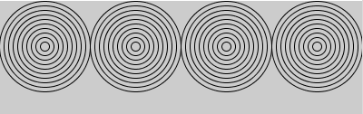
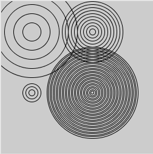

関数を作る
関数は、あるまとまった仕事をする複数の命令をひとまとめにして名前を付けて、いわばグループ化したものです。Processingは描画をはじめとするさまざまな機能を関数の形で、提供しています。処理させたい内容に応じて、新しい関数を作ることで、わかりやすく、見通しのいいプログラムにすることができます。
同心円を描く関数
問題1-1で、同心円をひとつ描きました。 同心円を複数描くとしたら、次のように同心円を描く命令部分を繰り返せば、 実現できます。

【リスト4-1】
size(400,125);
noFill();
int d = 10;
for(int i=1; i<=10; i=i+1){
ellipse(50, 50, d*i, d*i);
}
for(int i=1; i<=10; i=i+1){ //左から2つ目の同心円
ellipse(150, 50, d*i, d*i);
}
for(int i=1; i<=10; i=i+1){ //左から3つ目の同心円
ellipse(250, 50, d*i, d*i);
}
for(int i=1; i<=10; i=i+1){ //左から4つ目の同心円
ellipse(350, 50, d*i, d*i);
}
同心円を描く命令部分(直径変化量dの設定とfor文)が、 4回繰返し出てきます。同心円を描く命令部分を切り出して関数として定義しておけば、 その関数を呼び出すだけで、同じことができます。 関数の定義 は次のように書きます。
戻り値の型 関数名（引数の型 引数名, 引数の型 引数名, .....) {
処理の内容
}
関数名はその機能を表すdrawDoshinとし、戻り値はなし(void)で、引数は
同心円の中央の点の座標(x, y)と円の直径の変化量dの3つとします。3つの引数ともデータ型はfloat(小数点数)とします。
【リスト4-2】
void setup() {
size(250, 250);
noFill();
drawDoshin(50, 50, 10); //左から1つ目の同心円を描く関数の呼出し
drawDoshin(150, 50, 10); //左から2つ目の同心円を描く関数の呼出し
drawDoshin(250, 50, 10); //左から3つ目の同心円を描く関数の呼出し
drawDoshin(350, 50, 10); //左から4つ目の同心円を描く関数の呼出し
}
// 同心円を描く関数の定義
void drawDoshin(float x, float y, float d) {
for (int i=1; i<=10; i=i+1) {
ellipse(x, y, d*i, d*i);
}
}
独自の関数を定義する場合は、Activeモードでプログラムを書きますが、
上の例は、静的なグラフィックスを描くプログラムなので、draw()関数は定義していません。
同じ名前の関数を定義
リスト4-2で定義した関数drawDoshin()は、10個の円から成る同心円を描きます。 関数を呼出す時に、円の個数を指定したいとしましょう。そのために、個数を指定できる別の関数を定義します。 別の関数名にしてもいいですが、同心円を描くという機能は同じなので、関数名は変えず、円の数を渡す(知らせる)整数の引数をひとつ増やして、新しい関数を定義します。

【リスト4-3】
void setup() {
size(250, 250);
noFill();
drawDoshin(50, 50, 30, 5); //引数が4つの関数が実行される
drawDoshin(150, 50, 10); //引数が3つの関数が実行される
drawDoshin(50, 150, 10, 3);
drawDoshin(150, 150, 5, 30);
}
// (x, y)の位置にdの間隔で10の円から成る同心円を描く
void drawDoshin(float x, float y, float d) {
for (int i=1; i<=10; i=i+1) {
ellipse(x, y, d*i, d*i);
}
}
// (x, y)の位置にdの間隔でnの円から成る同心円を描く
void drawDoshin(float x, float y, float d, int n) {
for (int i=1; i<=n; i=i+1) {
ellipse(x, y, d*i, d*i);
}
}
このように、関数名は同じで、引数の数やデータ型が異なる関数を定義することができます。関数が呼出される時、関数名に加えて、引数の型やデータ型(これを関数のシグニチャと呼びます)が合致する関数が実行されます。
演習問題
Click for drawing
Click for drawing
void drawDoshin(float x, float y,
float d, int n, float dif)
x: 円のx座標
y: 円のy座標
d: 一番小さい円の直径
n: 円の個数
dif: 円が大きくなる割合、例えば1.2とすると、
円の直径が2割ずつ増える
そして、画面上でマウスをクリックしたら、その位置に波紋状の同心円が描かれるようにしてみましょう。